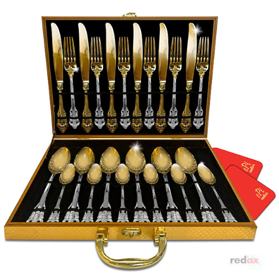
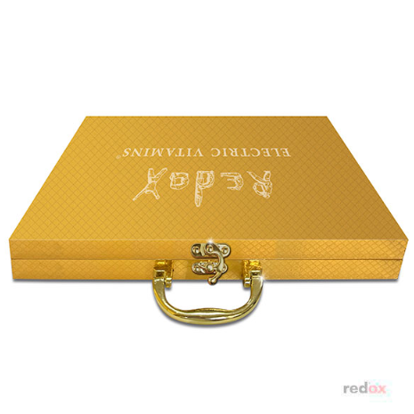

Золотые столовые приборы redox

Золотые наборы столовых приборов добавляют роскоши и элегантности любой
сервировке, делая Ваши столы идеальными для особых случаев. Столовые
приборы redox выполнены из гипоаллергенных, бактерицидных и драгоценных
материалов: высококачественная медицинская сталь, золото, цинк.


— Первые в мире столовые приборы, которые вырабатывают микротоки без
проводов и батареек, которые способствуют улучшению работы головного
мозга, ЖКТ, укрепляют иммунитет.
— Роскошная эксклюзивная лимитированная коллекция, созданная в
коллаборации с итальянскими дизайнерами в честь 35-летия лаборатории
redox.
— Столовые приборы покрыты золотом 24 карата (высококачественное
золочение 100% золотом).
— Каждый набор имеет выгравированный на ноже индивидуальный номер.
— Золотые наборы столовых приборов добавляют роскоши и элегантности
любой сервировке, делая ваши столы идеальными для особых случаев.
— Помимо роскошного, элегантного вида и высококачественного золочения,
оригинальная конструкция столовых приборов redox обеспечивает
образование электрических витаминов ≈150 μA (микротоков
кожно-гальванического происхождения без проводов и батареек) за счёт
восстановительных (REDuction) процессов на золоте и окислительных
(OXidation) на цинке.
— В ходе катодной реакции на золоте образуется промежуточный продукт
реакции восстановления — перекись водорода, которая способствует
улучшению работы ЖКТ, стимуляции перистальтики кишечника и
предотвращению возникновения изжоги.
— Столовые приборы redox с электрическими витаминами — это живые
инструменты и любят, когда ими пользуются, так как цинк, работая
антиоксидантом, растворяется и защищает полость рта от окислительных
процессов, укрепляя местный иммунитет.
Набор 24 предмета на 6 персон:
— Ложка столовая — 6 штук, вилка столовая — 6 штук, нож столовый — 6
штук, ложка десертная — 6 штук
— Кольцо-Биотренажер «Антистресс», латунь — 2шт;
— Инструкция — 1шт;
— Салфетка из микрофибры для ухода за столовыми приборами — 2 шт.